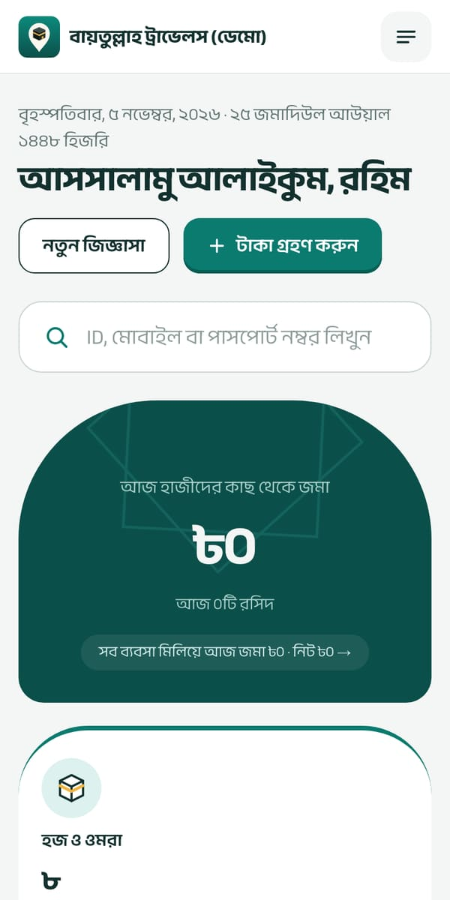
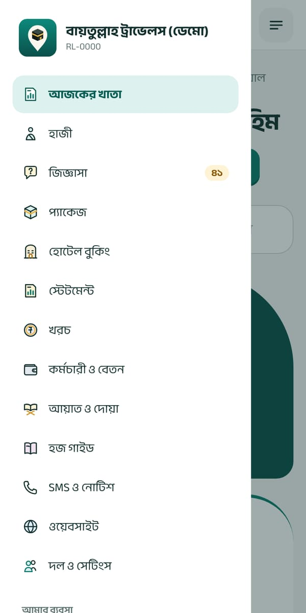
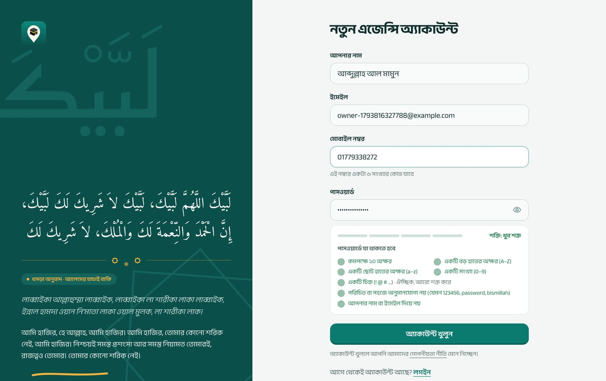
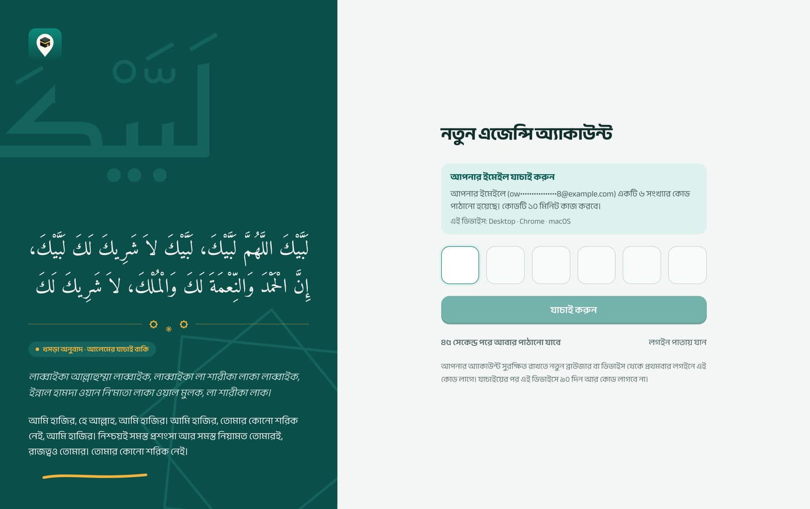
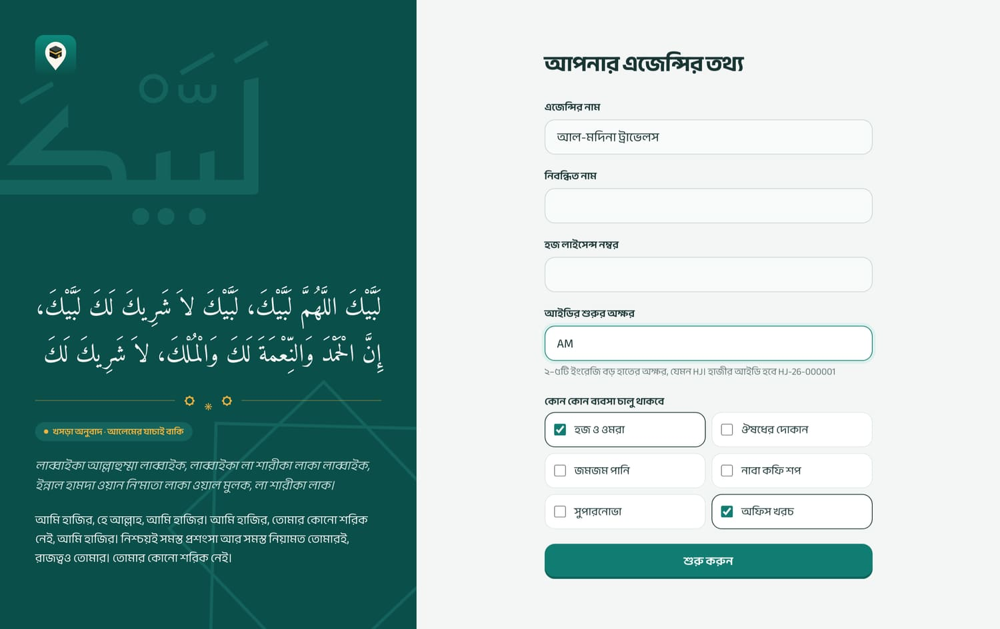

প্রথম দিন অধ্যায় ১ ও ২ পড়ে সেটআপ শেষ করুন। তারপর যিনি যে কাজ করবেন তিনি সেই অধ্যায় পড়বেন: কাউন্টারের কর্মী অধ্যায় ৩–৭, হিসাবরক্ষক ৭, ৮, ১০, ১১, দোকানের কর্মী ১২। অধ্যায় ১৯ (ভুল ঠিক করা) সবার জানা দরকার।
বইয়ে রঙিন বাক্সগুলোর অর্থ:
সবুজ বাক্স: কাজ সহজ করার পরামর্শ।
হলুদ বাক্স: ভুল হলে কীভাবে ঠিক করবেন।
লাল বাক্স: সাবধান, এই কাজ আর ফেরানো যায় না।
ধূসর বাক্স: সফটওয়্যারের কোনো সীমাবদ্ধতা, যা জেনে রাখা ভালো।
ছবিগুলো একটা নমুনা এজেন্সি (“বায়তুল্লাহ ট্রাভেলস (ডেমো)”) থেকে নেওয়া। আপনার পর্দায় নিজের এজেন্সির নাম আর তথ্য দেখাবে।
১সফটওয়্যার পরিচিতি
হজ ট্র্যাকিং একটা অনলাইন সফটওয়্যার। কম্পিউটার বা ফোনের ব্রাউজারে hajj.takatracker.com খুলে লগইন করলেই কাজ করা যায়, কিছু ইনস্টল করতে হয় না। আপনার সব তথ্য নিরাপদ সার্ভারে থাকে, প্রতিদিন ব্যাকআপ হয়।
এক জায়গায় যা যা করা যায়
ফোন বা অফিসে আসা মানুষের জিজ্ঞাসা লিখে রাখা
হজ ও ওমরার প্যাকেজ আর দাম
হাজী নিবন্ধন, পাসপোর্ট স্ক্যান, কাগজপত্র আপলোড ও যাচাই
কিস্তিতে টাকা গ্রহণ, QR কোডসহ ছাপানো রসিদ
দিন, মাস, বছরের স্টেটমেন্ট
মক্কা-মদিনার হোটেল বুকিং, কে কোন রুমে
অফিসের খরচ
কর্মচারী, বেতন শিট, অগ্রিম
জমজম পানি, ঔষধ, কফি শপের মতো পাশের ব্যবসা
এজেন্সির নিজের ওয়েবসাইট, হাজীদের SMS, হজ গাইড বই
মেনু
কম্পিউটারে বাঁ দিকে মেনু থাকে। ফোনে উপরে ডানে মেনু বোতাম চাপলে খোলে। কে কোন মেনু দেখবেন তা তাঁর ভূমিকার (রোল) উপর নির্ভর করে।

ফোনে আজকের খাতা

ফোনে মেনু খোলা অবস্থায়
১.১ কে কী করতে পারেন (ভূমিকা)
প্রত্যেক কর্মীর আলাদা লগইন থাকে, আর লগইনের সাথে একটা ভূমিকা। ভূমিকা অনুযায়ী সফটওয়্যার নিজেই ঠিক করে কে কোন কাজ করতে পারবেন।
ভূমিকা
কী কী পারেন
মালিক
সবকিছু। এজেন্সি খোলার সময় যিনি অ্যাকাউন্ট খোলেন তিনিই মালিক। শুধু মালিকই অ্যাডমিন বানাতে বা সরাতে পারেন।
অ্যাডমিন
মালিকের মতো প্রায় সবকিছু: প্যাকেজ, দল, ওয়েবসাইট, SMS, হিসাব।
হিসাবরক্ষক
স্টাফের সব কাজ, সাথে স্টেটমেন্ট, খরচ, বেতন, ছাড় দেওয়া, রসিদ বাতিল, আগের তারিখে লেখা।
শুধু বেছে দেওয়া দোকান: বিক্রি, স্টক, ক্রেতা, দৈনিক হিসাব। অফিসের আর কিছু দেখেন না।
আলেম
আয়াত-দোয়ার বাংলা অর্থ যাচাই ও অনুমোদন।
যে কাজগুলো শুধু উপরের ভূমিকার জন্য
কাজ
কে পারবেন
প্যাকেজ বানানো, বন্ধ-চালু করা
মালিক, অ্যাডমিন
হাজীকে ছাড় দেওয়া
মালিক, অ্যাডমিন, হিসাবরক্ষক
বকেয়ার চেয়ে বেশি টাকা নেওয়া
মালিক, অ্যাডমিন, হিসাবরক্ষক
রসিদ, খরচ বা দোকানের বিক্রি বাতিল
মালিক, অ্যাডমিন, হিসাবরক্ষক
আগের তারিখে এন্ট্রি (সর্বোচ্চ ৩১ দিন আগে)
মালিক, অ্যাডমিন, হিসাবরক্ষক
পুরো পাসপোর্ট নম্বর দেখা
মালিক, অ্যাডমিন, হিসাবরক্ষক
স্টেটমেন্ট, খরচ, বেতন
মালিক, অ্যাডমিন, হিসাবরক্ষক
হোটেলকে টাকা পরিশোধ লেখা
মালিক, অ্যাডমিন, হিসাবরক্ষক
কাগজ অসম্পূর্ণ থাকলেও হাজীকে “প্রস্তুত” করা (কারণসহ)
মালিক, অ্যাডমিন
কারও ব্যক্তিগত তথ্য স্থায়ীভাবে মোছা
মালিক, অ্যাডমিন
ওয়েবসাইট, SMS, দল ও সেটিংস
মালিক, অ্যাডমিন
বেতন শিট আবার খোলা
মালিক, অ্যাডমিন
অনুমতি না থাকলে পাতায় লেখা আসে “এই কাজের অনুমতি আপনার নেই”।
১.২ যে নিয়মগুলো সব জায়গায় খাটে
টাকার কোনো এন্ট্রি মোছা বা বদলানো যায় না। ভুল হলে “বাতিল” করে আবার সঠিকটা লিখতে হয়। বাতিল এন্ট্রি কাটা দাগে থেকে যায়, কে কেন বাতিল করলেন তাও লেখা থাকে। এতে কেউ গোপনে হিসাব বদলাতে পারে না।
বাতিল যেদিন করবেন, সেদিনের হিসাবে ওঠে। আগের কোনো দিনের স্টেটমেন্ট পরে আর বদলায় না।
টাকার অঙ্ক ১,৫০,০০০ বা ১৫০০০০ যেভাবে খুশি লিখুন, বাংলা সংখ্যাও চলে। দশমিকের পর সর্বোচ্চ দুই ঘর।
রেফারেন্স নম্বর নিজে থেকে তৈরি হয়, প্রতি বছর নতুন করে শুরু হয়: হাজী (আপনার অক্ষর, যেমন HJ-26-000123), রসিদ MR-, জিজ্ঞাসা IQ-, হোটেল বুকিং HB-, দোকানের বিক্রি ZM- (জমজম), MD- (ঔষধ), NC- (কফি), SN- (সুপারনোভা)।
সাবস্ক্রিপশন শেষ হলে সব দেখা যায়, কিন্তু নতুন কিছু যোগ বা বদলানো যায় না। লাল লেখা আসে “সাবস্ক্রিপশন চালু নেই…”।
২অ্যাকাউন্ট খোলা ও প্রথম দিনের সেটআপ
কে করবেন: এজেন্সির মালিক, একবার
২.১ অ্যাকাউন্ট খোলা
ব্রাউজারে hajj.takatracker.com খুলে বিনামূল্যে শুরু করুন চাপুন (বা সরাসরি hajj.takatracker.com/sign-up)।
আপনার নাম, ইমেইল আর একটা পাসওয়ার্ড দিন। পাসওয়ার্ডের নিচের তালিকার সব ঘর সবুজ না হওয়া পর্যন্ত বোতাম কাজ করবে না।
অ্যাকাউন্ট খুলুন চাপুন। আপনার ইমেইলে ৬ সংখ্যার একটা কোড যাবে। কোডটা বসিয়ে যাচাই করুন চাপুন। কোড ১০ মিনিট কাজ করে; না পেলে ৪৫ সেকেন্ড পরে নতুন কোড পাঠান চাপুন (স্প্যাম ফোল্ডারও দেখুন)।

অ্যাকাউন্ট খোলার ফর্ম: পাসওয়ার্ডের শর্তগুলো সবুজ হলে ঠিক আছে

ইমেইলে আসা ৬ সংখ্যার কোড বসান
পাসওয়ার্ডের শর্ত
কমপক্ষে ১০ অক্ষর; অন্তত একটা বড় হাতের (A–Z), একটা ছোট হাতের (a–z) অক্ষর আর একটা সংখ্যা; সহজে অনুমানযোগ্য নয় (যেমন 123456, password, bismillah, এজেন্সির নাম); আপনার নাম বা ইমেইল দিয়ে নয়। একটা চিহ্ন (! @ #) দিলে আরও শক্ত হয়।
২.২ এজেন্সির তথ্য

এজেন্সির তথ্য: নাম, লাইসেন্স, আইডির অক্ষর আর কোন ব্যবসা চালু থাকবে
এজেন্সির নাম: যে নামে মানুষ আপনাকে চেনে।
নিবন্ধিত নাম: সরকারি কাগজে যে নাম (ফাঁকা রাখলে এজেন্সির নামই বসে)। হজ লাইসেন্স নম্বর: রসিদে ছাপা হয়।
আইডির শুরুর অক্ষর: ২–৫টি ইংরেজি বড় হাতের অক্ষর, যেমন AM। হাজীর আইডি হবে AM-26-000001।
কোন কোন ব্যবসা চালু থাকবে: হজ ও ওমরা আর অফিস খরচ সবসময় থাকে। জমজম পানি, ঔষধের দোকান ইত্যাদি থাকলে টিক দিন (প্ল্যানে থাকলে)।
শুরু করুন চাপুন। আপনার ৩০ দিনের ট্রায়াল শুরু হয়; উপরে লেখা থাকে কবে পর্যন্ত।
নিবন্ধিত নাম, লাইসেন্স নম্বর আর আইডির অক্ষর পরে নিজে বদলানো যায় না। সাবধানে দিন। ভুল হলে সাপোর্টে যোগাযোগ করুন।
২.৩ প্রথম দিনের কাজের তালিকা
এই ক্রমে করলে সবচেয়ে সহজ হয়:
যোগাযোগের তথ্য: ওয়েবসাইট → সাধারণ → যোগাযোগ ঘরে ফোন, ইমেইল, অফিসের ঠিকানা দিন। এগুলো রসিদেও ছাপা হয় (অধ্যায় ১৩)।
প্যাকেজ: এই মৌসুমের প্যাকেজগুলো দাম সহ যোগ করুন (অধ্যায় ৫)।
কর্মীদের লগইন: দল ও সেটিংস থেকে প্রত্যেক কর্মীর আলাদা লগইন বানান (অধ্যায় ১৬)।
আগের হাজী: যাঁরা আগেই টাকা দিয়েছেন তাঁদের নিবন্ধন করে আগের জমাগুলো রসিদ হিসেবে তুলুন (নিচের পরামর্শ দেখুন)।
কর্মচারী: বেতনের হিসাব রাখলে কর্মচারীদের মূল বেতন আর ভাতা দিন (অধ্যায় ১১)।
হোটেল: মক্কা-মদিনার হোটেল আর বুকিং থাকলে যোগ করুন (অধ্যায় ৯)।
দোকান: পণ্য, দাম আর বর্তমান স্টক দিন; ক্রেতাদের আগের বাকি দিন (অধ্যায় ১২)।
ওয়েবসাইট: রং, লোগো, পরিচিতি ঠিক করে লিংকটা Facebook-এ দিন (অধ্যায় ১৩)।
সফটওয়্যারের আগের টাকা কীভাবে তুলবেন: হাজী আগে যা দিয়েছেন তা “টাকা গ্রহণ” দিয়ে রসিদ হিসেবে তুলুন, বাবদ ঘরে লিখুন “পূর্বের জমা, তারিখ …”। ৩১ দিনের বেশি পুরোনো তারিখ দেওয়া যায় না, তাই এগুলো আজকের তারিখে ওঠে, আর আজকের স্টেটমেন্টে বড় জমা দেখায়। এজন্য দৈনিক কাজ শুরুর আগে, প্রথম দিনেই সব পুরোনো জমা একবারে তুলে ফেলুন, আর ওই দিনটাকে “শুরুর জের” হিসেবে ধরুন। একইভাবে দোকানের ক্রেতার পুরোনো বাকি ক্রেতা যোগ করার সময় “আগের বাকি” ঘরে দিন।